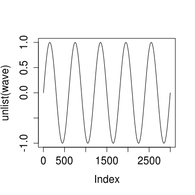

xRepeat(num, coll)xRepeat...(num, ...)
A list.
Create a collection by repeating another collection several times.
Returns the empty list if coll is length-zero or num is zero.
# Example 1 # # Use xRepeat to repeat a sine wave. range <- seq(0, 2*pi, len = 600) wave <- xRepeat(5, sin(range)) plot(unlist(wave), type = 'l')
# Example 2 # # Use xRepeat to build up a nested list.
xChop,
xChop...; xChunk,
xChunk...; xFlatten,
xFlatten...; xJoin,
xJoin...; xOneOf,
xOneOf...; xRecycle,
xRecycle...; xReverse,
xReverse...; xShuffle,
xShuffle...; xSortBy,
xSortBy...; xSplitAt,
xSplitAt...; xSplitBy,
xSplitBy...; xTabulate,
xTabulate...; xUnzipNames,
xUnzipNames...; xZipNames,
xZipNames...; xZip,
xZip...